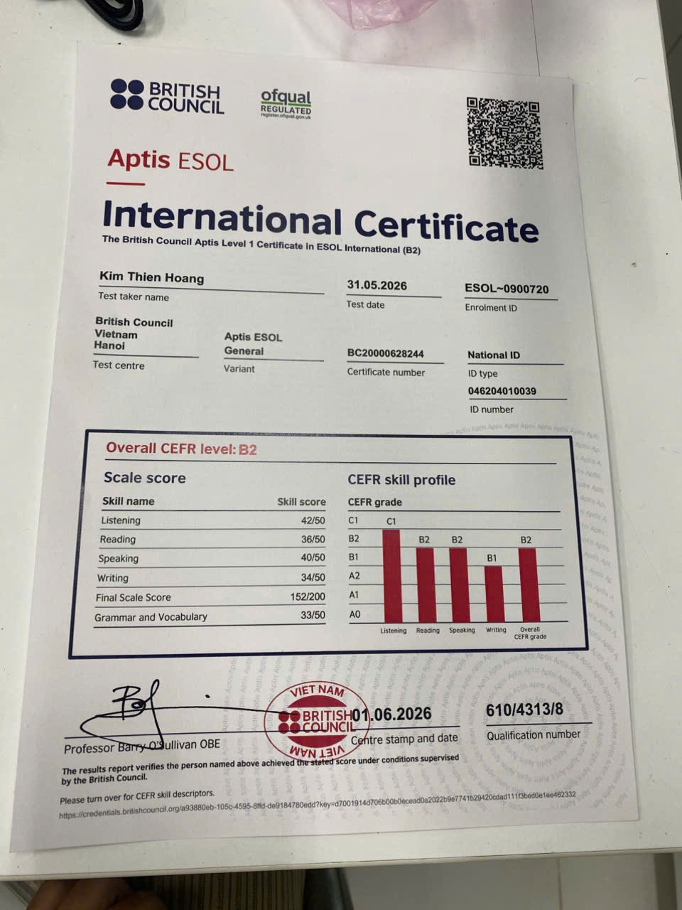
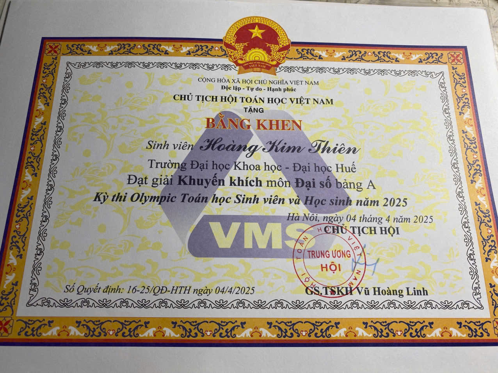
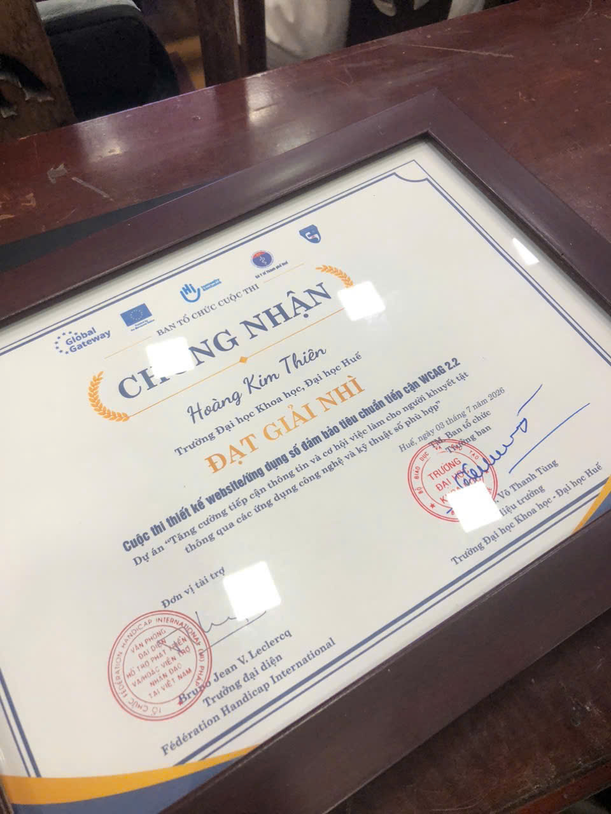
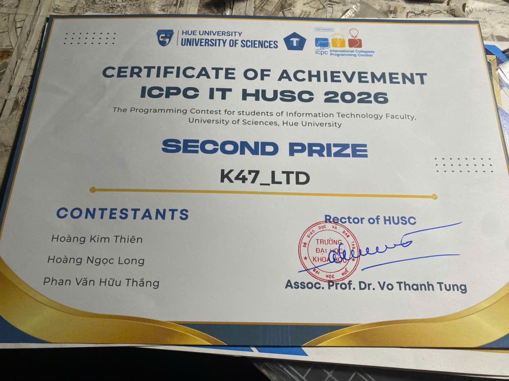
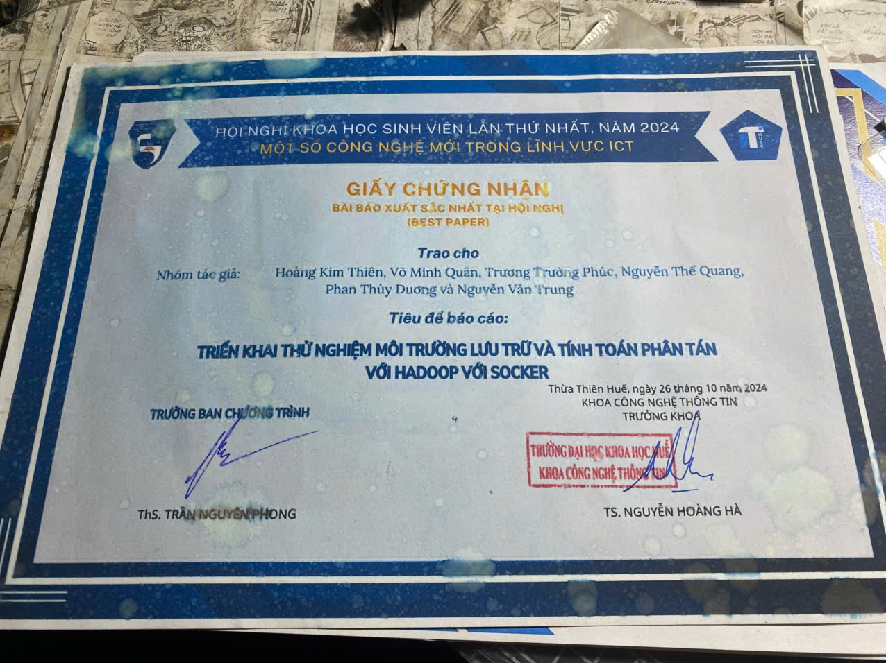
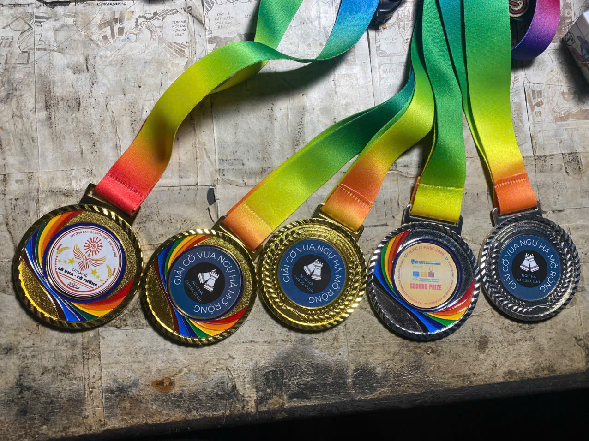
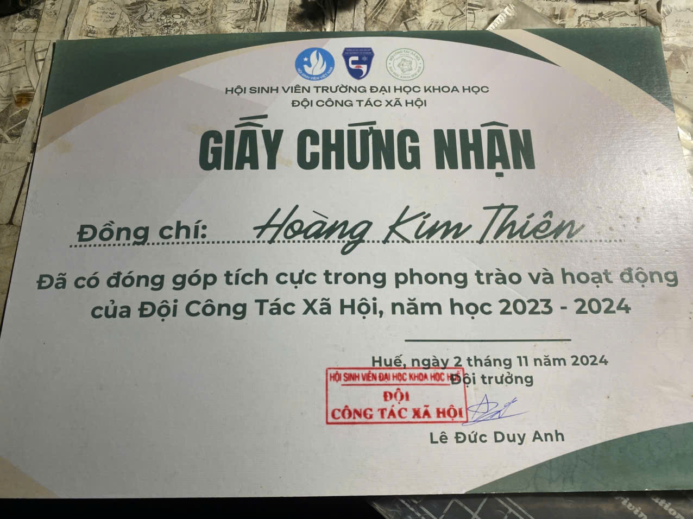
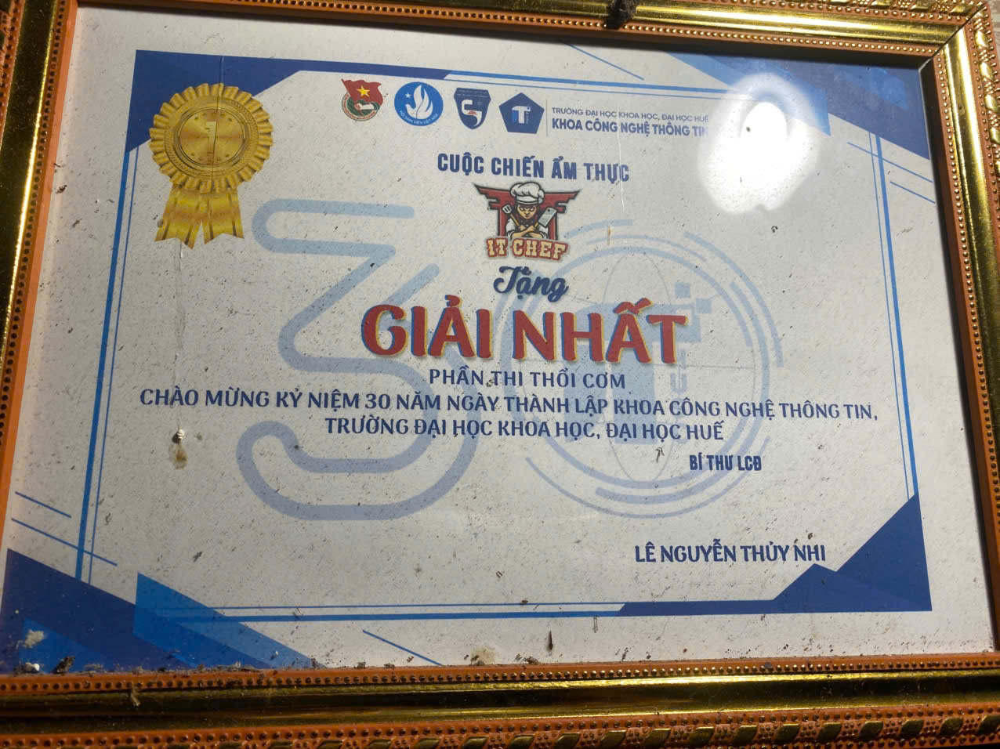
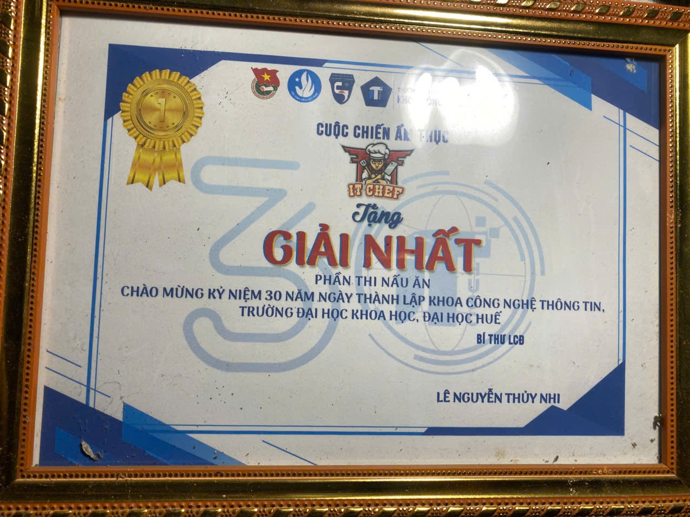

Hoang Kim Thien
Computer Science Student & AI Researcher
Hi, I'm Thien. An Excellent academic rank Computer Science student based in Vietnam. Specialized in optimizing Deep Learning algorithms for Edge AI devices, Full-Stack Web Development (with an Accessibility-First approach), and Natural Language Processing.
Web
Hoang Kim Thien
Computer Science Student | AI Research Enthusiast | Full Stack Developer
Academic & Professional Summary
An elite-ranking Computer Science undergraduate student with a stellar academic record, active scientific research papers accepted in international IEEE conferences, and practical experience delivering fully-accessible (WCAG 2.2 AA) production web systems.
About Me
Language Proficiency
Research Interests
My primary research interests focus on bridging the gap between state-of-the-art AI architectures and real-world execution constraints.
Computer Vision
Object detection, segmentation, and biometric face recognition.
Deep Learning
Model compression, knowledge distillation, and quantization.
Explainable AI (XAI)
Understanding model decision structures using attention maps & Grad-CAM.
Accessibility Technology
Leveraging assistive AI to build barrier-free software environments (WCAG 2.2).
Optimization Algorithms
Data-efficient learning pipelines, active learning, and gradient tuning.
Education & Academic Milestones
Bachelor of Science in Computer Science (GPA: 3.83/4.00)
K46 Computer Science Generation. Academic classification: Excellent. Ranked Top 2 out of all Information Technology students. Recipient of university merit scholarships for outstanding academic results in consecutive semesters.
Project Leader & Research Fellow
Led multiple class-level research projects, developing and compiling reports on recyclable waste object detection using YOLOv8 with Active Learning, and Vietnamese Text Summarization using TextRank combined with viT5.
Academic Honors & Recognitions
Merit Scholarships (Semester-wise)
Consistently awarded the prestigious university scholarship every semester for placing top tier in academic ranking.
National & University Honors List
- Accepted Paper at international IEEE MAPR 2026 Conference.
- Best Paper Award at the HUSC Student Scientific Conference.
- Second Prize in the WCAG 2.2 Accessible Web Design Contest.
- Consolation Prize in the National Mathematical Olympiad (Linear Algebra).
- Second Prize in the HUSC ICPC programming contest.
Academic Achievements
Click on any certificate to view the full resolution official evidence document.

Consolation Prize - National Math Olympiad
Awarded in Linear Algebra for solving complex algebraic structures and matrix spaces.

Second Prize - WCAG 2.2 Website Design
Recognized for SmartAgri, a Next.js digital agriculture platform optimized for the disabled.

Second Prize - University ICPC Contest
Achieved top rank solving algorithmic problems under strict memory and computation limits.

Best Paper - Student Scientific Conference
Awarded for outstanding research on 6-Bit Face Recognition model quantization and gradient coordination.

Academic Merit Award - Excellent Student
Official recognition for ranking Top 2 across Information Technology department with a 3.83 GPA.
Leadership and Activities
Active social participation, volunteering campaigns, and leadership in club organizations.
Vice President of HUSC Chess Club
Directly responsible for organizing club activities, coordinating inter-university tournaments, training members, and leading chess development initiatives. Maintained active partnerships with other clubs across Hue University.

Outstanding Leader - HUSC Chess Club
Awarded for successfully executing tournaments and organizing club activities as Vice President.

Outstanding Contribution - Social Work Team
Recognized for dedicating hours of community work, volunteering, and charity activities.

Active Youth Volunteer Campaigns
Awarded for volunteering in green summer campaigns and local environment support campaigns.

Organizer & Participant - IT Chef & Talent
Acknowledged for hosting IT community gatherings, cultural festivals, and cooking events.
Projects Portfolio
6-Bit Face Recognition Optimization
Quantized face recognition models (iResNet-50, MobileFaceNet) to 6-bit precision using gradient coordination (β-MSE loss) for edge AI deployment.
SmartAgri Digital Platform
A comprehensive, next-gen agricultural e-commerce & AI consulting ecosystem built with an "Accessibility-First" (WCAG 2.2 AA) paradigm.
Containerized Hadoop Cluster
Containerized an Apache Hadoop cluster environment over Docker, resolving HDFS external upload/download NAT routing and hostname resolution failures.
Vietnamese Summarizer Pipeline
A hybrid text summarization engine combining extractive ranking and abstractive transformer rewriting for Vietnamese documents.
Recyclable Waste Active Detector
Designed a real-time object detection system that identifies six classes of recyclable waste while incorporating Active Learning to decrease labeling budget.
ML-based RFID Anti-Collision
Research project on applying Machine Learning classifiers (Q-Learning and deep models) to prevent tag collisions in wireless RFID networks.
Fast-Converging and Architecture-Agnostic 6-Bit Face Recognition via Gradient Coordination and Refined Data
Kim Thien Hoang and Chien-Quang Le
Department of Information Technology, University of Sciences, Hue University, Vietnam
Abstract Background
Deploying deep face recognition models on Edge AI devices requires aggressive compression. However, extreme 6-bit (Q6) quantization distorts embedding space, destroying fine-grained matching. Distilling from full-precision teachers usually requires hundreds of thousands of synthetic samples and massive training iterations.
Proposed Solution
We introduce an architecture-agnostic gradient coordination framework. It employs a β-weighted Mean Squared Error (β-MSE) loss to amplify embedding alignment signals and a three-phase training recipe (warm-up, freeze observers, fine-tuning) to stabilize scale dynamic ranges.
Key Achievements
- 57.4x Faster Convergence: Achieved convergence in just 3,135 iterations vs. 180,000 for state-of-the-art QuantFace.
- 102% Recovery Rate: Student Q6 model recovered 102% of teacher's accuracy on the difficult AgeDB-30 benchmark.
- Data Efficiency: Replaced massive synthetic data with a compact subset of ~53,500 real images.
Technical Skills
Visualizing core programming, engineering, and framework capabilities.
Programming Languages
AI, CV & NLP
Web & Databases
Tools & Platforms
Contact Information
Whether you're looking to discuss scientific research projects, scholarship applications, internships, graduate opportunities, or full-stack software development projects, feel free to drop a message!